14
14供給できる防水シーツ8タイプ
どのタイプも、あらゆるサイズとカラー、御社のラベルとパッケージで製作できます。
14 58
58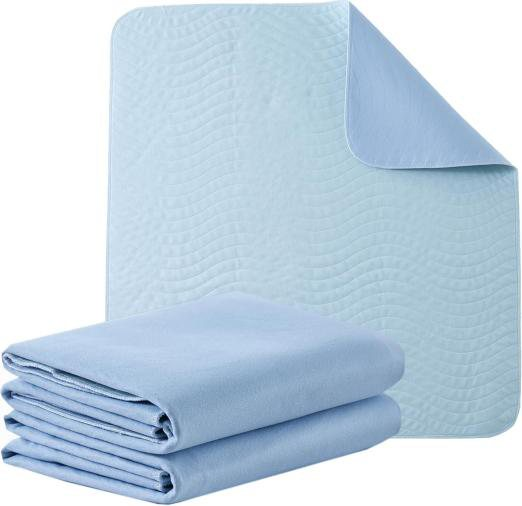
59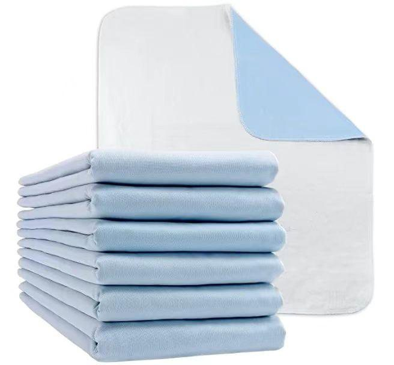
60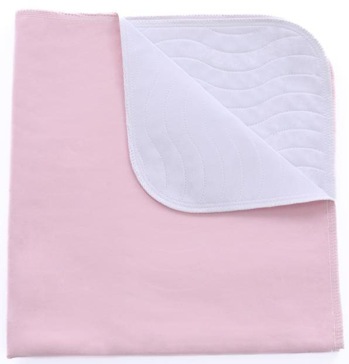
61ノーマルタイプ
毎日使える定番品。やわらかな起毛ポリエステルの表地と裏地が、ニードルパンチ吸収芯と TPU 防水層を包みます。カラーやサイズも簡単にカスタマイズできます。
| 表地 | やわらかな起毛ポリエステル 90 g/m²（または綿） |
|---|---|
| 吸水芯 | ポリエステル95％／レーヨン5％ または 65％／35％；200 / 230 / 270 / 340 g/m²；34 × 36 in パッド1枚あたり約 200 / 300 / 400 ml（ライト／スタンダード／ヘビー） |
| 防水層 | TPU フィルム 0.025 mm、30 g/m²；洗濯機で300回以上洗えます |
| 裏面 | やわらかな起毛ポリエステル 90 g/m²、滑り止め |
サイズ：18 × 24 in〜72 × 72 in、40 × 60 cm〜90 × 160 cm、または任意 · カラー：標準8色、プリント柄、Pantone 指定
ノーマルタイプの詳細 15
15 65
65 66
66 67
67綿表地 · PVC 裏地
綿の肌ざわりを好む方に。4種類の目付から選べる綿の表地の下に、やわらかなパッド層と吸収層、さらに滑り止めニットで保護した防水 PVC 裏地を重ねています。
| 表地 | 肌にやさしい綿、100 / 120 / 140 / 180 g/m² |
|---|---|
| パッド層 | ポリエステルのパッド層 |
| 吸水芯 | ポリエステル95％／レーヨン5％ または 65％／35％；200 / 230 / 270 / 340 g/m²；34 × 36 in パッド1枚あたり約 200 / 300 / 400 ml（ライト／スタンダード／ヘビー） |
| 防水裏地 | 滑り止めニット付き PVC；洗濯機で300回以上洗えます |
サイズ：18 × 24 in〜72 × 72 in、40 × 60 cm〜90 × 160 cm、または任意 · カラー：標準8色、プリント柄、Pantone 指定
綿表地 · PVC 裏地の詳細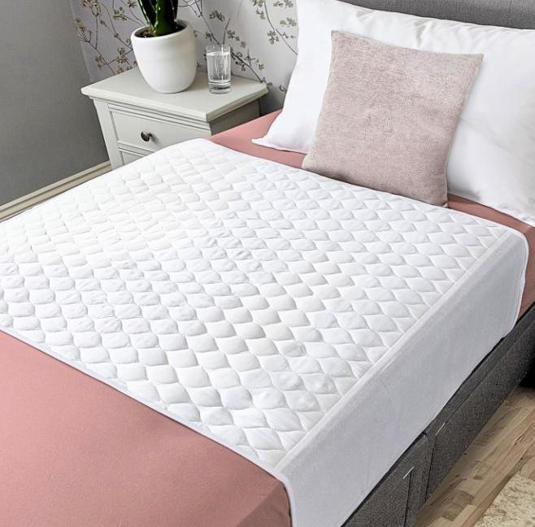
16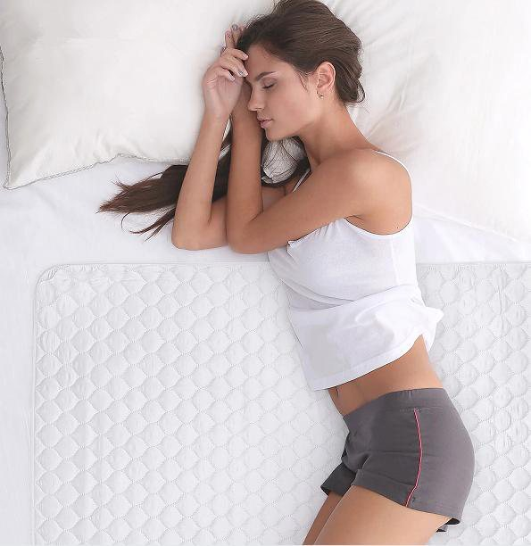
68竹繊維タイプ
5層構造。竹繊維の表地はひんやりなめらか、中綿層がやわらかさを加え、吸収芯、TPU 防水層、滑り止め裏地がしっかり守ります。
| 表地 | 竹繊維生地、ひんやりなめらかな肌ざわり |
|---|---|
| 中綿 | ポリエステル中綿層 |
| 吸水芯 | ポリエステル95％／レーヨン5％ または 65％／35％；200 / 230 / 270 / 340 g/m²；34 × 36 in パッド1枚あたり約 200 / 300 / 400 ml（ライト／スタンダード／ヘビー） |
| 防水層 | TPU フィルム 0.025 mm、30 g/m²；洗濯機で300回以上洗えます |
| 裏面 | やわらかな起毛ポリエステル、滑り止め |
サイズ：18 × 24 in〜72 × 72 in、40 × 60 cm〜90 × 160 cm、または任意 · カラー：標準8色、プリント柄、Pantone 指定
竹繊維タイプの詳細 17
17 70
70 71
71タオル地タイプ
タオル地のループが液体を肌から吸収芯へ導きます。表地の下には中綿層、吸収芯、TPU 防水層、汚れにくい滑り止め裏地。
| 表地 | タオル地（ループパイル） |
|---|---|
| 中綿 | ポリエステル中綿層 |
| 吸水芯 | ポリエステル95％／レーヨン5％ または 65％／35％；200 / 230 / 270 / 340 g/m²；34 × 36 in パッド1枚あたり約 200 / 300 / 400 ml（ライト／スタンダード／ヘビー） |
| 防水層 | TPU フィルム 0.025 mm、30 g/m²；洗濯機で300回以上洗えます |
| 裏面 | やわらかな起毛ポリエステル、滑り止め |
サイズ：18 × 24 in〜72 × 72 in、40 × 60 cm〜90 × 160 cm、または任意 · カラー：標準8色、プリント柄、Pantone 指定
タオル地タイプの詳細 18
18 72
72 73
73 74
74 75
75差し込みタイプ
寝返りの多い方や寝たきりの方の介護に。キルティングの中央部が吸収し、長いサイドウイングをマットレスの下に差し込むので、ずれたりよれたりしません。
| 表地 | やわらかな起毛ポリエステル 90 g/m²（または綿） |
|---|---|
| 吸水芯 | ポリエステル95％／レーヨン5％ または 65％／35％；200 / 230 / 270 / 340 g/m²；34 × 36 in パッド1枚あたり約 200 / 300 / 400 ml（ライト／スタンダード／ヘビー） |
| 防水層 | TPU フィルム 0.025 mm、30 g/m²；洗濯機で300回以上洗えます |
| 裏面 | やわらかな起毛ポリエステル 90 g/m²、滑り止め |
サイズ：18 × 24 in〜72 × 72 in、40 × 60 cm〜90 × 160 cm、または任意 · カラー：標準8色、プリント柄、Pantone 指定
差し込みタイプの詳細 19
19 77
77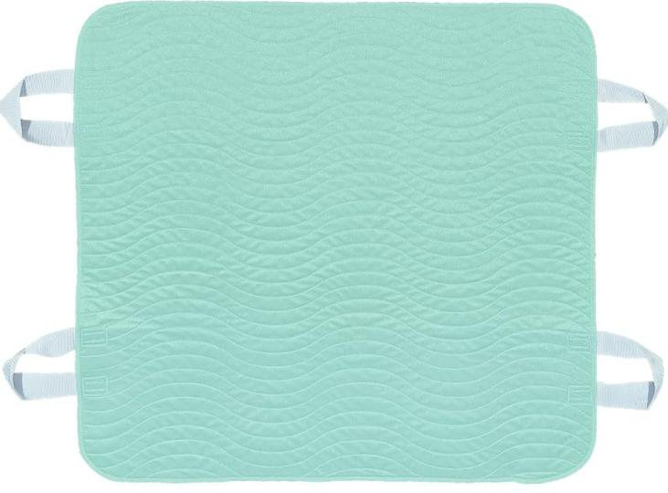
78 79
79 80
80持ち手付きタイプ
体位変換の補助具にもなるケア用シーツ。補強された持ち手で、2人の介護者が体を持ち上げ、位置を直し、向きを変えられます。使用後はそのまま平らに敷いて通常のベッド保護になります。
| 表地 | やわらかな起毛ポリエステル 90 g/m²（または綿） |
|---|---|
| 吸水芯 | ポリエステル95％／レーヨン5％ または 65％／35％；200 / 230 / 270 / 340 g/m²；34 × 36 in パッド1枚あたり約 200 / 300 / 400 ml（ライト／スタンダード／ヘビー） |
| 防水層 | TPU フィルム 0.025 mm、30 g/m²；洗濯機で300回以上洗えます |
| 裏面 | やわらかな起毛ポリエステル 90 g/m²、滑り止め |
サイズ：18 × 24 in〜72 × 72 in、40 × 60 cm〜90 × 160 cm、または任意 · カラー：標準8色、プリント柄、Pantone 指定
持ち手付きタイプの詳細 20
20 81
81 82
82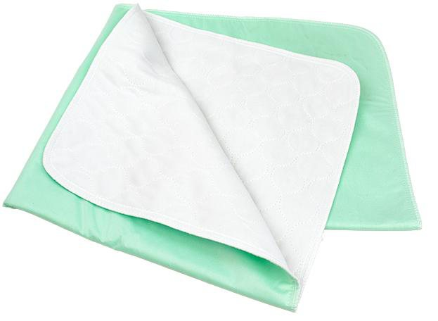
83 84
84PVC 裏地タイプ
大量購入向けのお手頃な選択肢。起毛ポリエステルまたは綿の表地と吸収芯を完全防水の PVC 防水層に重ね、滑り止め・毛玉防止のニット裏地で仕上げています。
| 表地 | やわらかな起毛ポリエステルまたは綿 |
|---|---|
| 吸水芯 | ポリエステル95％／レーヨン5％ または 65％／35％；200 / 230 / 270 / 340 g/m²；34 × 36 in パッド1枚あたり約 200 / 300 / 400 ml（ライト／スタンダード／ヘビー） |
| 防水層 | PVC；洗濯機で300回以上洗えます |
| 裏面 | ニット生地、滑り止め・毛玉防止 |
サイズ：18 × 24 in〜72 × 72 in、40 × 60 cm〜90 × 160 cm、または任意 · カラー：標準8色、プリント柄、Pantone 指定
PVC 裏地タイプの詳細 21
21 85
85 86
86Swift Dry（速乾）タイプ
洗濯回転の速い施設向け。ループパイルの表地と 340 g/m² の厚い吸収芯（34 × 36 in で約 400 ml）。吸収速度と乾燥時間はご注文ごとに測定し、試験報告書に記載します。
| 表地 | ループパイル生地 150 g/m² |
|---|---|
| 吸水芯 | ポリエステル65％／レーヨン35％、340 g/m²；34 × 36 in で約 400 ml |
| 防水層 | TPU フィルム 0.025 mm、30 g/m²；洗濯機で300回以上洗えます |
| 裏面 | やわらかな起毛ポリエステル 90 g/m²、滑り止め |
サイズ：18 × 24 in〜72 × 72 in、40 × 60 cm〜90 × 160 cm、または任意 · カラー：標準8色、プリント柄、Pantone 指定
Swift Dry タイプの詳細4つの層、それぞれの役割
すべてのタイプが同じ層構造をベースにしています。各層の素材を選べます。
 76
76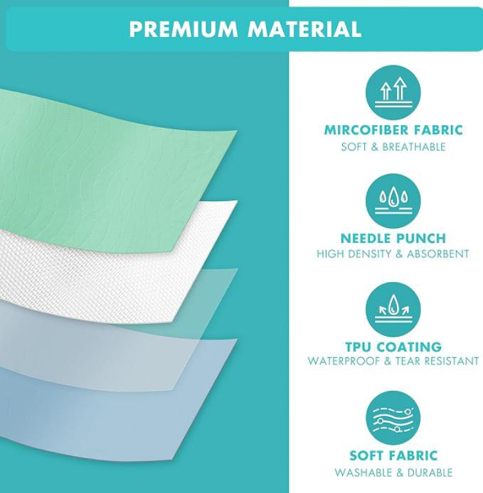
5784 64
64 69
69層ごとに
| 1 · キルティング表地 | 起毛ポリエステル 90 g/m² · 綿 100〜180 g/m² · 竹繊維 · タオル地 · ループパイル 150 g/m² |
|---|---|
| 2 · 吸収芯 | ニードルパンチ ポリエステル／レーヨン（95/5 または 65/35）· 200 / 230 / 270 / 340 g/m² |
| 吸収量 | 34 × 36 in パッド1枚あたり約 200 / 300 / 400 ml（ライト／スタンダード／ヘビー）；試験方法は「吸収性」ページに記載 |
| 3 · 防水層 | TPU フィルム 0.025 mm、30 g/m²、通気性があり静か · または PVC |
| 4 · 裏地 | 起毛ポリエステル 90 g/m²、滑り止め · またはニット生地、毛玉防止 |
| オプション | 中綿層の追加（5層構造）、多量用に吸収芯を二層に |
| 縁 | バイアス縁取り、二重縫い、角丸 |
| 耐久性 | 洗濯機で300回以上；95 °C 対応の施設向け仕様あり |
カラー、プリント、キルティング、持ち手、ウイング
表地と裏地の色は別々に選べます。
 26
26 27
27 28
28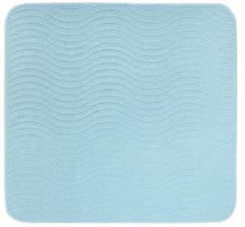
29 30
30 31
31 32
32 33
33標準色8色
ホワイト、ライトミント、グリーン、ライトブルー、ピーチ、ブラウン、ネイビー、グレーの在庫生地。ツートン（例：白の表地に青の裏地）も標準対応です。
| 在庫カラー | 1サイズ500枚から |
|---|---|
| 特注カラー | Pantone TCX の任意の色、1 SKU 1,000枚から |
| ツートン | 表地と裏地を別々の色に |
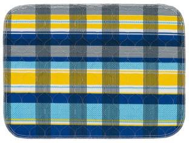
88 89
89 90
90 91
91 92
92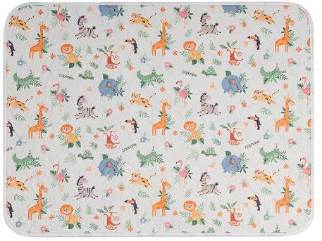
93 94
94 102
102プリント柄
チェックや濃い色は大人用・ペット用でシミが目立たず、楽しい柄は子ども部屋にぴったり。御社のデザインを表地にプリントすることもできます。
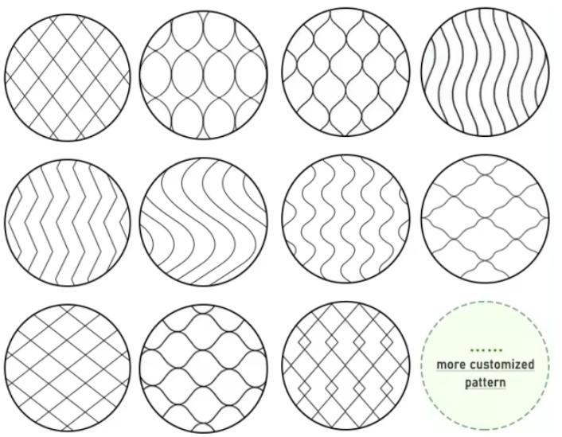
87キルティング柄12種
ウェーブ、ダイヤ、チャネル、オニオン、うろこなど、またはロゴ入りのオリジナルキルト。キルティングは数百回の洗濯でも芯を固定し、液体を広い面積に広げます。
79 968077
968077持ち上げ・体位変換用の持ち手
補強された持ち手で、パッドが体位変換の補助具になります。2人の介護者が体を持ち上げ、位置を直し、向きを変えられ、その後はそのまま平らに敷いて通常のベッド保護になります。
| 持ち手 | 1枚に4・6・8個 |
|---|---|
| 代表的なサイズ | 34 × 52 in（86 × 132 cm）持ち手8個；34 × 36 in 持ち手4個 |
| 対応タイプ | 持ち手付き VC-PH01、綿表地 VC-PC01、PVC 裏地 VC-PVC01 |
| 用途 | 病院、介護施設、在宅介護ベッド |
187267差し込みウイング
長いサイドウイングをマットレスの下に差し込むので、ずれたりよれたりしません。寝返りの多い方や寝たきりの方の介護で最も要望の多い仕様です。
| ウイング | ウイング2枚、46 × 86 cm（18 × 34 in） |
|---|---|
| 代表的なサイズ | 中央部 34 × 36 in または 34 × 52 in |
| 対応タイプ | 差し込みタイプ VC-PF01、竹繊維 VC-PB01、綿表地 VC-PC01 |
標準19サイズ、または任意のサイズ
北米向けはインチ、欧州・日本向けはセンチ表記。寸法公差 ±2 cm。
66標準サイズ
インチ：18 × 24 · 24 × 36 · 30 × 36 · 34 × 36 · 34 × 52 · 34 × 60 · 36 × 60 · 34 × 76 · 36 × 72 · 72 × 72
センチ：40 × 60 · 60 × 90 · 70 × 90 · 75 × 90 · 75 × 100 · 90 × 160
その他のサイズも受注生産できます。
1・2・3・4枚入りの小売パック、または施設向けのまとめ梱包。
用途・パック入数付きのサイズ一覧| タイプ | 広げたサイズ | 主な用途 | 入数 |
|---|---|---|---|
| 座面 / 乳児 | 18 × 24 in | おむつ替えマット、ハイチェア、チャイルドシート、車いす、ペットのクレート（4層構造） | 3 |
| 車いす / ソファ | 24 × 36 in | リクライニングチェア、ソファの座面、車いす、ベビーベッド | 2 / 4 |
| シート／シングルベッド | 30 × 36 in | シングルベッドの腰の下、ソファの座面 | 2 / 4 |
| 介護ベッド / シングル | 34 × 36 in | 最も人気の小売サイズ。ベッド（腰の下） | 2 / 4 |
| ベッド・ロング | 34 × 52 in | 肩からひざまでを覆う | 1 / 2 |
| ベッド・エクストラロング | 34 × 60 in | 寝返りの多い方、マットレスの幅いっぱい（シングル） | 2 |
| ベッド・ワイド | 36 × 60 in | ダブル / クイーンベッド、2人用、大型犬 | 2 |
| ベッド・フルレングス | 34 × 76 in | シングル / 介護ベッドのマットレスを頭から足元まで。寝たきりの介護 | 1 |
| ベッド — 全長・ワイド | 36 × 72 in | 頭から足元までカバー、シングルベッド・介護ベッド | 1 |
| ベッド — 全幅 | 72 × 72 in | ダブル／クイーンベッド、全幅 | 1 |
| ウイング付き・標準 | 34 × 36 in + ウイング2枚 18 × 34 in | ウイングをマットレスの下に差し込むので、シーツがずれない | 2 |
| ウイング付き・ロング | 34 × 52 in + ウイング2枚 18 × 34 in | より長く覆えてウイング付き。認知症や寝返りの多い方に | 2 |
| メートル法 — S | 15.7 × 23.6 in | おむつ替えマット、ペットケージ、車のシート | 3 |
| メートル法 — M | 23.6 × 35.4 in | ベビーベッド、椅子、ソファの座面 | 2 |
| メートル法 — ベッド | 27.6 × 35.4 in | シングルベッドの腰の下 | 2 |
| EU サイズ | 29.5 × 35.4 in | ドイツ / EU の介護用品標準サイズ | 1 / 2 |
| メートル法 — ロング | 29.5 × 39.4 in | 介護ベッド、長めのカバー | 1 / 2 |
| 日本向けハーフ | 35.4 × 23.6 in | 日本の介護用防水シーツのハーフサイズ | 1 / 2 |
| メートル法 — 全長 | 35.4 × 63 in | 介護ベッド、ほぼ頭から足元まで | 1 |
| カスタム | 任意のサイズ | 受注生産 | カスタム |
大人用防水エプロン
 100
1005デザイン、VC-BIB01〜VC-BIB05
| VC-BIB01 | チェック、3色 |
|---|---|
| VC-BIB02 | 青と白のチェック |
| VC-BIB03 | ネイビーチェック |
| VC-BIB04 | ライトブルーチェック |
| VC-BIB05 | ブルーのタオル地 |
洗濯機で洗え、大人にふさわしい落ち着いたデザイン。プライベートブランド向けに生地、プリント、留め具をカスタマイズできます。介護施設や在宅介護用品の販売店が防水シーツと一緒によく注文します。
洗える防水シーツのラインを立ち上げませんか？
販売市場、サイズ、数量をお知らせください。1営業日以内に仕様書と数量別価格をお送りします。